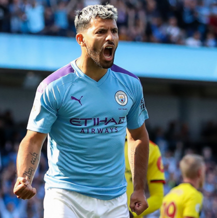
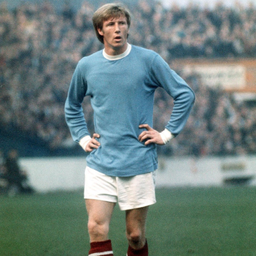
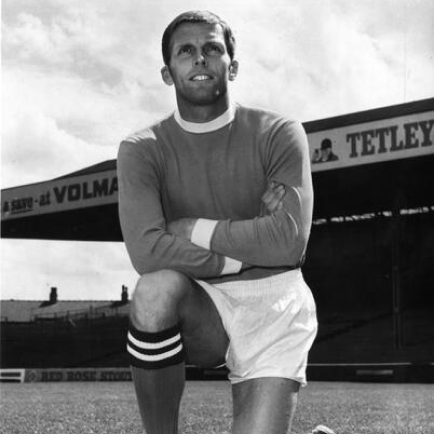
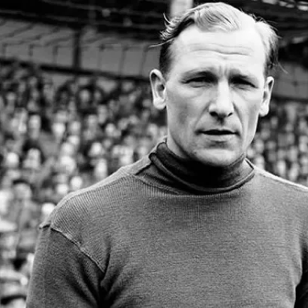

Manchester City
Manchester City Football Club ou simplesmente Manchester City é um clube de futebol inglês, fundado em 1880 sob o nome de FC St. Mark's (West Gorton) tornando-se posteriormente Ardwick Association Football Club, e finalmente, no dia 16 de abril de 1894, no seu nome atual. Disputa atualmente a Premier League, tendo a sua sede em Manchester, no Noroeste da Inglaterra. É considerado um dos maiores clubes da Inglaterra. O City é um dos clubes mais antigos e tradicionais da Inglaterra, passou a maior parte de sua história na Primeira Divisão do futebol inglês, nesse tempo são 92 temporadas na primeira divisão até a Temporada 2020-21, a primeira delas sendo na temporada 1899–1900,[2] 25 temporadas na segunda, e uma temporada na terceira; já na Premier League essa é sua 23ª temporada na principal divisão do futebol inglês, desde a criação da Liga (1992-93, o clube foi um dos seus 22 membros fundadores). No ranking de pontos conquistados na história do Campeonato Inglês o City é o sexto colocado.
Títulos
Campeonato Inglês: 8
Supercopa da Inglaterra: 6
Ídolos
- 
- 
- 
- 
Kun Agüero
Por fim, obviamente Sergio Agüero estaria presente na lista dos ídolos do Manchester City. Contratado do Atlético de Madrid em julho de 2011, o argentino é figura de destaque desde seu primeiro ano nos gramados ingleses. A primeira façanha que Kun Agüero atingiu na Inglaterra foi seu gol no último minuto contra o Queens Park Rangers. Na última rodada da Premier League da temporada 2011/2012, o City precisava vencer para sagrar-se campeão inglês, título que não conquistava há 44 anos. A estrela do argentino brilhou e o atacante fez o gol do título nos acréscimos. Daquele dia em diante, Agüero certamente estaria presente na história do Manchester City.
Colin Bell
Considerado por muitos o maior jogador da história do Manchester City, Colin Bell chegou ao clube em 1966. Bell fez grande parceria com Francis Lee e Mike Summerbee, formando o maior trio ofensivo da história do clube. No entanto, a carreira do meio campista teve um trágico fim. Em 1975, quando tinha apenas 29 anos, Bell teve uma dividida com Martin Buchan, do Manchester United, e teve grave lesão no joelho.
Alan Oakes
Único prata da casa da lista, certamente Alan Oakes estaria presente. O meio campista passou a integrar o time em 1959, mas passou chegou ao elenco profissional somente no ano seguinte. Além de fazer parte da equipe que contava com Francis Lee, Mike Summerbee e Colin Bell, Oakes conseguiu o feito de atuar em mais jogos com a camisa do Manchester City. Segundo o site oficial do clube, foram 680 jogos durante 17 anos no time.
Bert Trautmann
Paraquedista da Frente Oriental durante a Segunda Guerra Mundial e prisioneiro de guerra, Bert Trautmann é uma das figuras mais curiosas e polêmicas da lista. Durante a guerra, o ex-goleiro foi transferido à Frente Ociedental e foi preso pelos britânicos. Após cumprir sua pena, Trautmann recusou o repatriamento alemão e estabeleceu-se em Lancashire como agricultor e goleiro do St. Helens Town.
Etihad Stadium
Os primeiros planos para a construção de um estádio na cidade de Manchester surgiu como parte da tentativa da cidade para sediar os Jogos Olímpicos de Verão de 2000. O conselho da cidade de Manchester encomendou o projeto de um estádio com uma capacidade de 80.000 espectadores em terreno vazio conhecido como Eastlands.